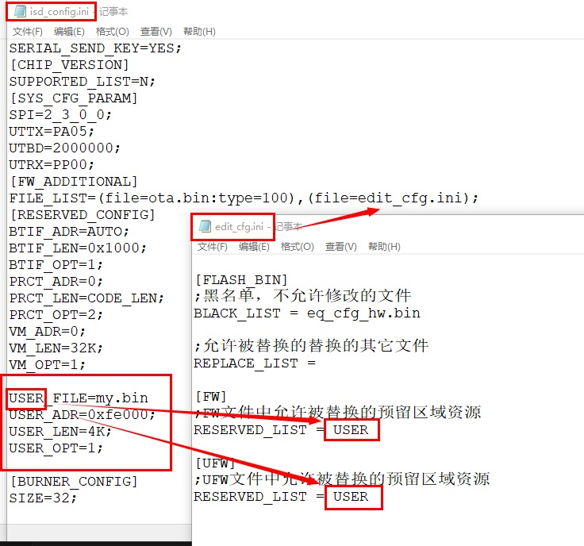
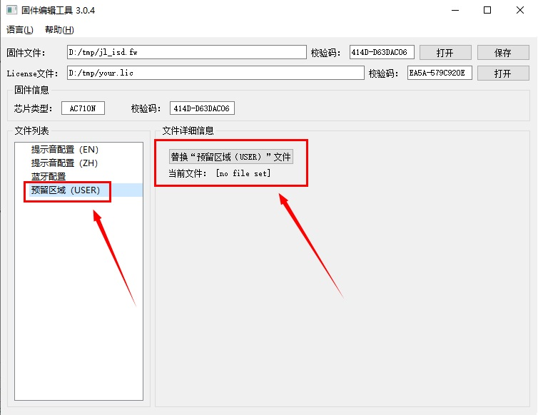
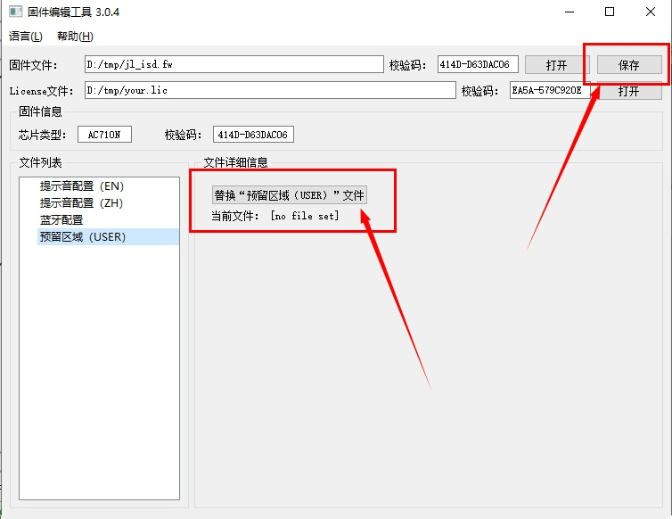

1.2.6. Replacing Reserved-Area Files
1.2.6.1. Replace reserved-area file data
By default, reserved-area file data cannot be replaced. You must first add the reserved area name to the edit_cfg.ini file, as shown below:

After selecting the correct license file, you can modify reserved-area files by replacing the reserved-area configuration data, as shown below:

Click Replace "Reserved area (USER)" file (替换“预留区域（USER）”文件) and select a new reserved-area configuration file, then click the Save (保存) button in the upper-right corner to save the reserved-area file data and generate a new firmware file, as shown below:
